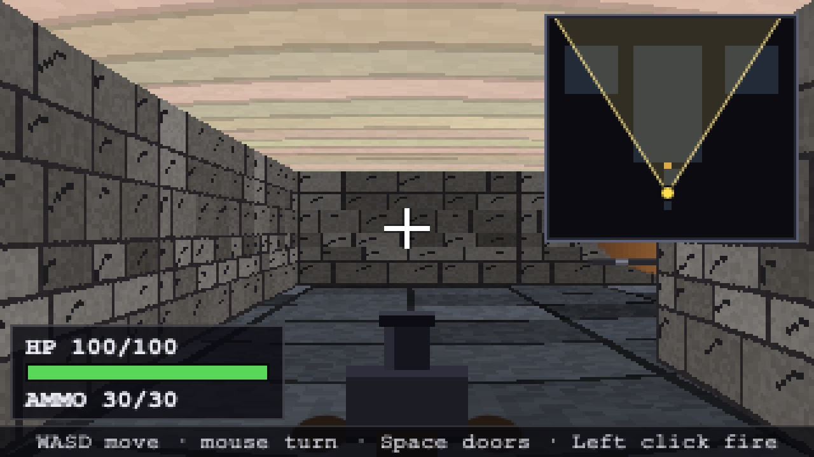

24 November 2026 · Agentic task loop · first-person raycaster
Raycaster Shooter · Inkling 2 Mini · Splash 1.7.2 · Tenaz main + Pi · thinking high
Tenaz ended COMPLETE after 5 h 59 min, 41 sessions and 13 tasks; T002 was sent back twice and T006 once, every other task was accepted first time, and the first final review returned ACCEPT. Played: the player spawns at the end of a one-cell dead-end corridor and the user could barely move and could not find the door. The door 4 cells ahead opens with Space within 2 cells and the player can walk through it into the north stone room, but it is always drawn as a closed wall, open or not. The west and east rooms are sealed off. Arrow keys strafe; turning is mouse only.

What was checked
- Runner final state COMPLETE on 24 November 17:55:41.582 UTC: 13 tasks done, none pending. Bootstrap passed its three steps first time (19 requirements, R19 manual; 12 tasks). T008's first attempt passed its own check but broke T001.skeleton (a first-frame check written for the placeholder colours), and the builder declared a conflict; replan 026 added T013 to amend that check, after which T008 passed. Review verdicts: T002 CHANGES twice then ACCEPT, T006 CHANGES once then ACCEPT, the other 11 tasks ACCEPT first time. Three replans, one adding T013. Final review cycle 1 returned ACCEPT with verify passing and all 19 requirements covered, R19 by hand.
- Runner events: 41 sessions. Session 031-builder-T008 ran 63 min and was stopped at its turn limit (60 turns, 1.5 times the 40-turn budget); Tenaz continued the same work in 032 without counting an attempt. Watchdog steers: turn-budget steers in 031, 033, 038 and 040, a context-pace steer in 010, own-checks reminders in 029 and 031. No reverts, context compactions, provider errors, capacity limits or engine retries.
- Output limit: no reply stopped at it. The proxy recorded 779 tool-use and 43 stop endings, plus one request aborted with the session at the turn limit, which never reached Splash. 11 replies were longer than 16,384 tokens, the reply limit of the earlier Splash and mlx-serve runs; the largest, in 010-builder-T002, was 63,843 tokens (63,240 of them reasoning) of the 65,536 allowed.
- Configuration: Pi 1.6.0 over RPC with the openai-completions provider splash, thinking high, text input only, a 262,144-token context window and maxTokens 65,536; Tenaz main 77b3c5b with defaults except maxOutputTokens 65,536, temperature 1.0, generic engine, sandbox off. The preflight reported reasoning, cache and tools true and vision not tested.
- Earlier attempts in this configuration, not recorded as runs: one on Tenaz main 3f43405 at a 128K window, paused by hand at about 2 h 20 min with 5 of 14 tasks done after 4 sessions were cut at Tenaz's fixed 16,384-token reply limit, the reason maxOutputTokens was added; and one on 77b3c5b at 128K with 45,876-token replies, discarded during bootstrap after 2 sessions to try the 256K window with 64K replies. Each used its own Splash process; none of their requests are in this record.
- `verify --all` on a clean clone of the final commit d32adf5 with the run's node_modules: 15 of 15 passed (T000.tools to T013.painted-frame), as Tenaz recorded. Model-written checks that test state and math, not playability. Without vision, the model checked frames through ASCII renders and canvas colour counts (getImageData probes).
- Played by Claude in the built-in browser and by the user. The player spawns at (15,25) facing north, at the end of a one-cell corridor (column 15, rows 22-27) with an alcove at column 16, rows 22-23, holding a barrel; the arrow keys strafe rather than turn, and turning is mouse only. The user could barely move and could not find the door. The door at (15,21), 4 cells ahead, opens with Space within 2 cells: in Claude's test door.open reached 1 and the player walked into the stone room to about y 14.9. But raycaster.js treats 'D' cells as solid, so the door is drawn as a closed wall whether open or not; from the spawn it shows the stone texture (render.js looks up the texture in the cell just short of the door face) and only up close its planks. The minimap marks it amber. The model's own DONE.md says the door renders as a wall when open.
- Map: 32 by 32 cells. The west brick room and the east wood room are closed off by walls 2 and 3 cells thick and cannot be reached; only the north stone room, with 3 enemies, can. The thinking-low run had the same sealed-rooms fault.
- Not checked in hand play: combat beyond the door test, mouse look in the user's browser, frame rate. In a scripted headless replay while preparing this record, three clicks killed the first enemy, which fell and stayed down; health stayed at 100 while the other two stood next to the player.
- Engine metrics: one Splash process wrote 826 Done summaries. The first 4 belong to the preflight; all 822 completed proxy records match the remaining 822 one-to-one, in order and uniquely by (prompt, output, cached), ending at the last summary in the log. For all 41 sessions the matched summaries' fresh input, cached and output tokens equal the usage Tenaz journaled. TTFT comes from Splash's 'TTFT of request' lines.
- Memory: Tenaz's 794 host samples at 30 s report memory pressure normal throughout. Wired memory went from 21.6 GiB at the first sample to a maximum of 53.4 GiB, and free memory fell to 0.05 GiB at its lowest. Swap use stayed at about 13.4 GiB, already in use before the run. Tenaz sampled Splash's Python parent (0.24 to 0.46 GiB), not its engine, so no engine footprint is recorded.
- Public artifact: `vite build --base ./` of the final commit d32adf5 in the clean clone; its index.html and JavaScript bundle are byte-identical to the run's own dist. Plain canvas code with no URLs in the bundle; it made no request outside its folder and logged no page errors in the headless replay. Screenshot: the spawn view from that replay at 1280x720.
Limits of this evidence
Completion is the runner outcome. Inkling 2 Mini, a looped mixture of experts, as Unsloth's UD-Q4_K_M GGUF on Splash 1.7.2 with the DFlash2 drafter at a 256K context, Pi thinking high, replies up to 65,536 tokens and text only, on the Raycaster brief of the thinking-low Splash run and the Inkling 2 Mini mlx-serve run. Against the thinking-low run, this run changed the thinking (high against low), the context window (256K against 128K, budget 170,393 against 85,196), the reply limit (65,536 against 16,384) and the Tenaz build (77b3c5b against 3f43405) at once, so it is not a controlled comparison; against the mlx-serve run the engine and quantization differ as well. The playthroughs were by Claude in the built-in browser, and by the user, who could barely move and could not find the door.
Configuration
The model, serving engine and agent used for this execution.
| Field | Value | Detail |
|---|---|---|
| Model · primary | Inkling 2 Mini · primary · reasoning high (Pi thinking level high; Splash started with --default-reasoning-effort high). Splash logged every request as 'effort high · thinking off', yet the replies carried reasoning: Pi counted 994,254 reasoning tokens, 78.7% of the output. What Splash's label means for this model was not established. | Unsloth Dynamic UD-Q4_K_M GGUF (Inkling-2-Mini-UD-Q4_K_M.gguf, 16,610,544,608 bytes, sha256 78fcedcf93c5d1bfe83e225513b71392bb52259be0eaa5f8899c856a2e5834ae), the same install as the thinking-low run. The card lists it at 16.61 GB with a mean KL divergence of 0.0108 against UD-Q8_K_XL and the same top token 97.9% of the time. |
| Checkpoint · primary | unsloth/Inkling-2-Mini-GGUF:UD-Q4_K_M | primary model artifact · revision 8078d149286eec7193795413b9e0643da6d11fa1 |
| Model · drafter | Inkling 2 Mini DFlash2 · drafter | — |
| Checkpoint · drafter | incoai/Inkling-2-Mini-DFlash2 | drafter model artifact · revision 4f9088ea66c21f2b99ed657d1941c306b03e84d2 |
| Runtime | Splash 1.7.2 · Homebrew formula splash 1.7.2; the engine start script wrote `splash --version` (Splash 1.7.2) before starting it · One splash serve process, started for this run at 11:55:58 UTC and running until after COMPLETE; registered with Tenaz as a generic engine with start and stop scripts and reached through Tenaz's proxy. --model unsloth/Inkling-2-Mini-GGUF:UD-Q4_K_M --offline --no-webui --max-context 256K --default-reasoning-effort high --idle-release off; installed from the Hugging Face cache at the target and drafter revisions above (install manifest written at 08:17 UTC, before this run), vision disabled. Startup log: 'Ready · context 256K · text only', SSD prefix cache up to 19.0 GiB, routed experts held in memory (14,702 MiB), --verify-rows auto; no Neural Engine line. Temperature 1.0 pinned through Tenaz's proxy; top-p and top-k left to Splash, whose Inkling defaults are 1.0 and 0. Pi's max_tokens 65,536 (Tenaz maxOutputTokens). mode | inference engine and exact build |
| Harness | Pi coding agent over RPC driven by Tenaz main 77b3c5b (it reports 0.8.0 (77b3c5b)) 1.6.0 | the agent or client that drove the run |
| Runner | Tenaz main · build 77b3c5b after 0.8.0 (unreleased) | open-source runner, github.com/aartiles/tenaz · how the runner evolved |
| Hardware | Apple MacBook Pro · 64 GB unified memory | hardware recorded for this execution |
| Workload | Raycaster Shooter · revision 1 | One-shot raycaster brief by @ddalcu, as posted by @Beamsters1, used verbatim as the Tenaz brief (sha256 5c3cf17c..., the same file as the thinking-low Splash run, the Inkling 2 Mini mlx-serve run and the Qwen 3.8 27B pi-adapted Raycaster runs); the local model wrote its own spec, verify and task plan. Per-session context budget 170,393 tokens (0.65 of 262,144); replies up to 65,536 tokens. Text only: builders and reviewers could not look at screenshots. No operator action after launch. |
| Context window | 262,144 tokens | maximum context configured for the serving runtime |
| Repetitions | 1 | executions recorded for this workload; one means an indicative result, not an estimate |
Inference measurements
Engine-side rates for this run. Each figure states its own statistic; figures from different runs are not interchangeable.
| Metric | Value | Definition |
|---|---|---|
| TTFT · median | 0.629061 s | Median engine-reported TTFT ('TTFT of request' lines, millisecond precision) across matched requests. · n=822 · 90th percentile 4.74 s, mean 2.125 s, maximum 60.4 s; 36 requests over 10 s. Includes the run's cache mix; not a prefill rate. |
| Decode · per-request median | 75.4 tok/s | Median of Splash's per-request decode rate across matched requests. · n=822 · 10th percentile 59.6, 90th percentile 111.4 (linear interpolation). Median 83.0 below 16K prompt tokens (119 requests), 74.9 from 16K to 32K (307), 72.7 from 32K to 64K (349), 65.1 from 64K to 128K (47). |
| Decode · output-weighted | 65.7903 tok/s | Total output tokens divided by the sum of each request's output tokens over its decode rate. · n=822 |
| Tokens per decode cycle · drafter | 3.4666 tokens/cycle | Output-token-weighted mean of Splash's tokens per decode cycle with the DFlash2 drafter (median 3.8). · n=822 · Splash logs tokens per cycle, not drafted and accepted counts, so this is not an acceptance percentage. |
| Host wired memory · median | 50.14 GiB | Median host wired memory across Tenaz's 30-second samples from start to end of the run. · n=794 · 21.6 GiB at the first sample, maximum 53.43 GiB; free memory 0.05 GiB at its lowest. Host-wide, includes every process. |
| Swapped in during the run | 0.473 GiB | Swap-in pages summed over Tenaz's memory samples (31,005 pages of 16 KiB); host-wide swap I/O, not resident memory. · n=794 · Memory pressure normal in every sample. |
Agent session counters
Agent-wide usage totals. These include reasoning, tool calls and waiting, and are not model decode speed.
| Metric | Value | Definition |
|---|---|---|
| Run elapsed | 359.5 min | Session 001 start after the preflight (24 November 11:56:11.683 UTC) to COMPLETE (17:55:41.582 UTC); includes tools, checks and reviews. · n=1 · 5 h 59 min 30 s; no pauses. |
| Agent sessions | 41 sessions | All harness sessions: 3 bootstrap, 18 builder, 16 reviewer, 3 replan and 1 final reviewer. · n=1 |
| Sessions ended early | 1 sessions | Sessions with ok=false. · n=41 · 031-builder-T008, stopped at its turn limit (60 turns) and continued by 032 without counting an attempt. |
| Operator interventions | 0 actions | No pauses, relaunches, configuration changes or edits after the first session started. · n=1 |
| Model responses | 822 responses | Proxy request records of this run that completed; none ended in error. · n=823 · One more record, the request in flight when 031-builder-T008 hit its turn limit, was aborted before reaching Splash and carries no tokens. |
| Matched model requests | 822 requests | Completed proxy records matched one-to-one, in order and uniquely to Splash Done summaries by (prompt, output, cached). · n=822 · 4 earlier summaries, from this run's preflight, unassigned and excluded. |
| Tool calls | 862 calls | Sum of harness tool_calls across all 41 session records. · n=41 |
| Context compactions | 0 compactions | Compaction count across all session records. · n=41 |
| Responses stopped at the output limit | 0 responses | Proxy records that stopped at the 65,536-token output limit. · n=822 · Largest reply 63,843 tokens; 11 replies were longer than 16,384 tokens. |
Context and token counters
Token totals as reported by the harness or engine. Cached and cumulative figures are not additive with fresh input.
| Metric | Value | Definition |
|---|---|---|
| Maximum prompt context | 121,659 tokens | Largest prompt across matched requests; not the configured server window. · n=822 · Tenaz's per-session context peak, which adds the reply, reached 121,700 tokens of the 170,393 budget, in 031-builder-T008. |
| Cumulative input | 28,379,103 tokens | Sum of total prompt tokens across matched requests, including repeatedly reused context; not unique input. · n=822 |
| Cached input | 26,362,016 tokens | Sum of prompt tokens Splash reported cached across matched requests. · n=822 |
| Fresh input | 2,017,087 tokens | Total prompt minus cached prompt tokens across matched requests. · n=822 |
| Output tokens | 1,264,149 tokens | Sum of output tokens across matched requests, reasoning included. · n=822 |
| of which reasoning output | 994,254 tokens | Reasoning tokens in Pi's usage, summed over the 41 journaled sessions. · n=41 · 78.7% of the output. |
| Prompt-cache token share | 92.8924 % | Cached prompt tokens divided by total prompt tokens, weighted by tokens across matched requests. · n=822 |
Recorded check counters
Counts from the checks recorded with this run.
| Metric | Value | Definition |
|---|---|---|
| Tasks completed | 13 tasks | Final task cards marked done; none active, todo or blocked. · n=13 · 12 from bootstrap and T013, added by a replan after T008 declared a conflict with check T001.skeleton. |
| Reviews returning changes | 3 reviews | Task review verdicts returning CHANGES: T002 twice and T006 once. The single final review returned ACCEPT. · n=16 |
| Project checks passing | 15 checks | Checks passing in `verify --all` on a clean clone of the final commit, rerun after the run. · n=15 · Model-written checks, not an independent acceptance suite. |
Request records & provenance
822 numeric request records in proxy order, each matched one-to-one to a Splash Done summary by total prompt, output and cached tokens. TTFT comes from Splash's 'TTFT of request' lines and decode from its Done lines. The preflight's summaries and the one aborted proxy record are excluded. No prompts, tool results, session identifiers or local paths are included.
Run ID: 2026-11-24-inkling-2-mini-udq4km-splash-v172-thinking-high-256k-out64k-tenaz-main-77b3c5b-pi-raycaster-shooter
One execution, with checks transcribed from the retained record. A completed session is not a quality score. Measurement method · All runs